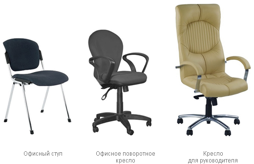
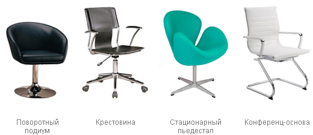
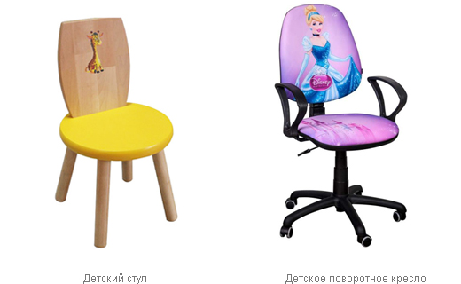

Как выбрать кресло или стул для работы
Кресло поворотное – благодаря специальному поворотному механизму может поворачиваться вокруг своей оси на 360 °. Имеет колесики, облегчающие перемещение кресла. Встречается в двух вариантах:
Конференц-кресло (офисный стул) – обычно не имеет колесиков и регулировок, а значит не подойдет для длительной работы. Оптимальный выбор для конференц-залов (семинары, собрания, переговоры). Такой стул стоит намного дешевле поворотного кресла и может укладываться в стопку, что существенно экономит место в офисе.
Кресло для посетителей – может быть разного уровня комфортности: от обычного офисного стула до очень удобного мягкого кресла. Но в любом случае, такое кресло не имеет регулировок и предназначено для кратковременного сидения.
Кресло поворотное детское – напоминает «взрослую» модель, но имеет яркий дизайн и сниженную посадку. Выбирая кресло для ребенка, следует помнить: чем больше диапазон регулировок, тем дольше кресло будет служить ребенку, «вырастая» вместе с ним.
Стул детский – стандартный школьный стул с жестким деревянным сиденьем или поворотное кресло, не имеющее подлокотников. Детский стул (даже с основанием в виде рамы) часто имеет регулировки по высоте.

Крестовина – звезда с роликами-колесиками (чаще всего пятилучевая), которая не только обеспечивает устойчивость кресла, но и дает возможность ему передвигаться в любом направлении и вращаться вокруг своей оси. Минус – риск поломки колесиков. Этот вариант основания встречается чаще всего (используется в поворотных креслах).
Важно: чем больше лучей в крестовине, тем устойчивее кресло.
Конференц-основа – выполняется в виде прямоугольной рамки или четырех отдельных ножек. Кресло с таким основанием (конференц-кресло, для гостей) не имеет колесиков, а значит, не может перемещаться.
Поворотный подиум – стойка без колесиков, обеспечивающая вращение кресла. Такое основание используется в некоторых креслах для посетителей.
Стационарный пьедестал – крестовина, но без колесиков. Такое основание иногда позволяет вращение кресла вокруг своей оси. Стационарный пьедестал можно встретить в некоторых моделях для посетителей.

От количества и характера регулировок напрямую зависит комфортабельность кресла – самые удобные модели имеют большое число разнообразных функций.
Существует два параметра комфорта – пассивный и активный.
Пассивный – обеспечивается без каких-либо специальных механизмов:
Важно: регулировать подлокотник следует таким образом, чтобы угол изгиба в локтевой области составлял приблизительно 90°.
Активный – достигается посредством специальных механизмов:
Важно: ориентир для правильной регулировки высоты сиденья – стопы пользователя должны полностью стоять на полу, а согнутые ноги составляют угол в 90°.
Высота спинки регулируется так: спинка должна быть удобной опорой для спины, а ее выпуклая часть в области поясницы – хорошо поддерживать позвоночник.
Глубина сиденья должна быть не меньше 2/3-2/4 длины бедра. Если этот параметр будет больше, то могут возникнуть проблемы с кровообращением, а если меньше, то возможно ощущение дискомфорта и даже соскальзывание с кресла.
Стоит обратить внимание и на функцию регулировки угла наклона спинки – кресло подстраивается под любую спину (это важно, поскольку спинка кресла выступает в качестве опоры для спины человека и берет на себя основную часть нагрузки).
Угол наклона спинки по отношению к сиденью кресла персонала должен составлять 90°: это оптимальный баланс между расслаблением и рабочим состоянием сотрудника. В более комфортабельных моделях, предназначенных для руководителя, этот параметр будет выше, но в пределах разумного, поскольку работать в положении «полулежа» вряд ли возможно.
Выбирая тот или иной вариант регулировок кресла, стоит исходить из продолжительности рабочего дня:
Важно: следует помнить, что большое количество регулировок и функций увеличивает стоимость кресла. Кроме того, ввиду усложнения конструкции будет понижаться прочность и надежность модели.
Основание
Основание и корпус кресла изготавливается из металла (стойка, нижняя опора) и пластика (колеса); каркасы подлокотников и спинки часто выполняются из металла с пластиковым покрытием.
В качестве декоративного отделочного материала может использоваться и дерево, например, для подлокотников. Однако дерево в отличие от металла или пластика чувствительно к царапинам и другим механическим повреждениям.
Наполнитель
Поролон – дешевый и «дышащий», но недолговечный материал. Плотность поролона в качественных креслах должна быть не менее 25-40 кг/м кв.
Пенополиуретан – устойчивый к износу и долговечный, но более дорогой материал. Пенополиуретан выгодно отличается от поролона тем, что он представляет собой единое целое, а не состоит из нескольких блоков, что исключает возможность экономить на его толщине или плотности.
Обивка
Синтетическая ткань – сравнительно недорогой, достаточно прочный, устойчивый к износу материал. Синтетика не накапливает статическое электричество, устойчива к появлению «катышков». Такой материал хорошо «дышит» и позволяет реализовать практические любые дизайнерские решения, но выглядит непрезентабельно.
Синтетическая ткань часто используется для обивки конференц-кресел, стульев для посетителей, кресел для персонала.
К синтетическим тканям относятся:
Кожа – элитный дорогой материал, имеющий ряд преимуществ: экологичность, высокая прочность и износостойкость, гипоаллергенность. Эффектная на вид кожа придает креслу солидность и респектабельность. Обычно этот материал используется в креслах, предназначенных для руководителя.
Кожа встречается в нескольких видах.
Cow (категория С) – самая высококлассная кожа, при обработке которой сохраняется ее природная фактура (шрамы, прожилки, особенности окраса и т.д.), что придает креслу эксклюзивный вид. Достоинства: мягкая, приятная на ощупь кожа, отлично впитывает влагу. Недостатки: очень высокая цена, сравнительно низкая прочность и устойчивость к износу, сложность в уходе.
Buffalo (категория В) – при обработке этой кожи производится частичная коррекция ее внешнего вида. Достоинства: достаточно высокая устойчивость к износу, гигроскопичность и воздухопроницаемость.
Split (категория А) – при обработке этой кожи производится полная коррекция ее внешнего вида. Достоинства: низкая цена, очень высокая прочность и устойчивость к износу, простой уход. Недостатки: самая низкая гигроскопичность и воздухопроницаемость.
Кожзам – по своим потребительским качествам приближается, а иногда и превосходит натуральную кожу, но стоит значительно дешевле. Благодаря синтетической природе, кожзам выгодно отличается от натуральной кожи разнообразием фактуры и широкой цветовой гаммой. Этому материалу в процессе обработки можно придать различные полезные качества (устойчивость к УФ-излучению, огню и низким температурам, грибку).
Благодаря своей универсальности, кожзам может использоваться для обивки конференц-кресел, офисной мягкой мебели и кресел руководителя.
Кожзам встречается в двух видах:
Цвет кресел должен не только хорошо вписываться в интерьер офиса, но и быть практичным. Поэтому чаще всего выбирают черные, коричневые, темно-синие, темно-зеленые, серые цвета. Приглушенные тона хорошо маскируют загрязнения и мелкие дефекты. Обивка ярких цветов, например, белого, требует регулярной чистки, иначе вид такого кресла утратит свою презентабельность.
Для детей очень важен внешний вид кресла. Существует множество моделей, украшенных изображениями героев из фильмов, мультфильмов и сказок, букв, цифр, животных, растений. Таким образом, можно подобрать каждому ребенку кресло по его вкусу. Выбирайте кресло вместе с ребенком – это позволит сделать примерку «вживую» и остановиться на варианте, который ему понравится.
Стул или кресло должен быть устойчивым, чтобы ребенок не смог его опрокинуть. Важными критериями являются отсутствие острых углов и легкий вес. Чтобы отличить стул для дошкольника от школьной мебели, можно ориентироваться на высоту сиденья – до 34 см и 36 см соответственно.

Высота сиденья
Этот параметр зависит от роста ребенка. Например, при росте 150-159 см, высота сиденья над полом должна составлять не меньше 44 см, при росте 160-169 см, высота сиденья – 46-46.5 см, при росте 170 см и выше, высота – 48 см.
Важно: ноги ребенка при сидении на стуле должны стоять на полу, а не висеть в воздухе. Если его рост недостаточный, то необходимо использовать регулируемые подставки под ноги.
Регулировки
Правильно подобранный компьютерный стул должен соответствовать возрасту, росту и весу ребенка. Для подстройки кресла под индивидуальные особенности ребенка существуют регулировки.
Высота сиденья – самая важная регулировка, позволяющая перемещать сиденье по высоте и таким образом, подстраивать его под рост ребенка.
Также обратите внимание на регулировку спинки по высоте и глубине (а также угла ее наклона) – это обеспечит комфорт ребенку и предотвратит риск заболеваний позвоночника.
Оптимальной высотой спинки является та, которая заканчивается на уровне лопаток ребенка. Это не даст возможности ему принять вредную для здоровья позу.
Подлокотники, подголовник, подножник снимают напряжение с соответствующих групп мышц и выступают в качестве дополнительных опор тела. Тем самым они обеспечивают удобное положение рук, головы, ног человека, сидящего в кресле, предотвращая возникновение таких заболеваний, как остеохондроз позвоночника, варикоз, грыж дисков и просто утомления, снижающего качество работы.
Ролики – выполняются из таких материалов:
Важно: выбирая кресло, имеет смысл убедиться в том, что ролики хорошо катаются не только по гладкой, но и по ворсистой поверхности пола.
Офисное кресло должно быть удобным, безопасным и функциональным. Выбирая кресло, необходимо посидеть на нем и убедиться в его функциональности. Чтобы оценить качество кресла, тщательно осмотрите и ощупайте его, проверьте надежность работы всех механизмов и регулировок. При изучении сертификата качества, обратите внимание на экологичность использованных материалов.
Слагаемые качественного офисного кресла: